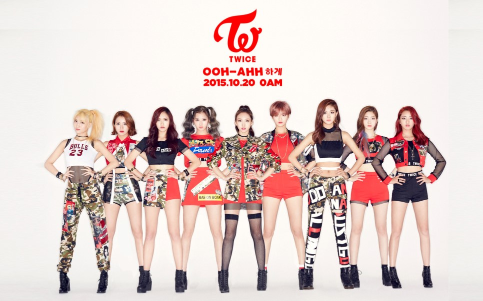

I feel loved, I feel so special 자꾸 숨고만 싶어서 마주 하기가 싫어서 모든 게 의미를 잃은 듯이 내가 의미를 잃은 듯이 가만히 주저앉아 있을 때
그때 내 앞에 나타난 너의 따뜻한 미소와 손길에 Everything's alright 초라한 Nobody에서 다시 Somebody 특별한 나로 변해 You make me feel special 세상이 아무리 날 주저앉혀도 아프고 아픈 말들이 날 찔러도 네가 있어 난 다시 웃어 That's what you do